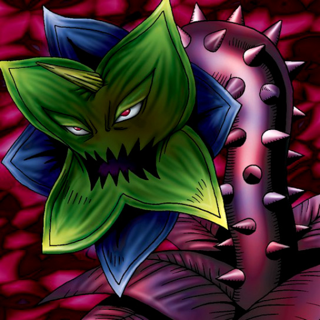

Abyss Flower

STATS
ATK: 750
DEF: 400DECK COST
Deck Cost per Card: 12Fusion List (40 Possible Fusions)
- Abyss Flower + Arlownay = Queen of Autumn Leaves
- Abyss Flower + Armaill = Bean Soldier
- Abyss Flower + Armed Ninja = Bean Soldier
- Abyss Flower + Battle Warrior = Bean Soldier
- Abyss Flower + Bone Mouse = Wood Remains
- Abyss Flower + Clown Zombie = Pumpking the King of Ghosts
- Abyss Flower + Corroding Shark = Pumpking the King of Ghosts
- Abyss Flower + Crawling Dragon #2 = B. Dragon Jungle King
- Abyss Flower + Crawling Dragon = B. Dragon Jungle King
- Abyss Flower + Dancing Elf = Queen of Autumn Leaves
- Abyss Flower + Dark Gray = Flower Wolf
- Abyss Flower + Dragon Zombie = Pumpking the King of Ghosts
- Abyss Flower + Fire Reaper = Wood Remains
- Abyss Flower + Flame Ghost = Pumpking the King of Ghosts
- Abyss Flower + Hibikime = Queen of Autumn Leaves
- Abyss Flower + Kagemusha of the Blue Flame = Bean Soldier
- Abyss Flower + Key Mace = Queen of Autumn Leaves
- Abyss Flower + Little Chimera = Flower Wolf
- Abyss Flower + Lunar Queen Elzaim = Queen of Autumn Leaves
- Abyss Flower + M-Warrior #1 = Bean Soldier
- Abyss Flower + M-Warrior #2 = Bean Soldier
- Abyss Flower + Magical Ghost = Pumpking the King of Ghosts
- Abyss Flower + Masked Clown = Bean Soldier
- Abyss Flower + Mech Mole Zombie = Wood Remains
- Abyss Flower + Milus Radiant = Flower Wolf
- Abyss Flower + Monster Eye = Rose Spectre of Dunn
- Abyss Flower + Phantom Ghost = Wood Remains
- Abyss Flower + Princess of Tsurugi = Queen of Autumn Leaves
- Abyss Flower + Shadow Specter = Wood Remains
- Abyss Flower + Silver Fang = Flower Wolf
- Abyss Flower + Sleeping Lion = Flower Wolf
- Abyss Flower + Swordsman from a Foreign Land = Bean Soldier
- Abyss Flower + The 13th Grave = Pumpking the King of Ghosts
- Abyss Flower + The Little Swordsman of Aile = Bean Soldier
- Abyss Flower + The Snake Hair = Pumpking the King of Ghosts
- Abyss Flower + Vishwar Randi = Queen of Autumn Leaves
- Abyss Flower + Wolf = Flower Wolf
- Abyss Flower + Wood Clown = Bean Soldier
- Abyss Flower + Wood Remains = Pumpking the King of Ghosts
- Abyss Flower + Zombie Warrior = Pumpking the King of Ghosts